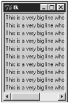

| < BACK | Make Note | Bookmark | CONTINUE > |
Geometry Management
All Tkinter widgets have access to specific geometry management methods, which have the purpose of organizing widgets throughout the parent widget area. These methods are grouped in three distinct classes that provide a nice way to lay out child widgets in their parent widget. Tkinter exposes the following geometry manager classes: pack, grid, and place.
-
pack— This geometry manager organizes widgets in blocks before placing them in the parent widget.
-
grid— This geometry manager organizes widgets in a table-like structure in the parent widget.
-
place— This geometry manager organizes widgets by placing them in a specific position in the parent widget.
Each one of these geometry managers has a specific purpose. The pack manager, for example, is convenient for application windows'design. On the other hand, the grid manager is perfect for designing dialogs because you can easily arrange the position of several widgets using an easy-to-figure-out table structure, behind the scenes. And last, but not least, we have the place manager. This manager is perfect for placing a widget in a specific position in a frame or window. However, it is not that useful to design complex structures because it requires a lot of specific information about the coordinates of the widget.
The usage of these methods is very simple. When you create a widget, such as
b = Button(root, text="Quit", padx=5, justify=CENTER)
You can apply the geometry method directly on the created object.
b.pack(side=RIGHT)
Or, if you do not want to create one more object instance, you can simply call the geometry method directly from the creation line:
Button(root, text="Quit", padx=5, justify=CENTER).pack(side=RIGHT)
pack()
The pack manager adds the widgets to the frame or the window based in the order that the widgets are packed. After creating a Frame widget, you can start adding widgets to it (the area where the Frame stores a widget is called a parcel). If you want to place a group of widgets next to each other, you can use the same anchor option for all of them. Therefore, they will be stored in the same parcel of the parent frame. If you don't specify any option, the widgets are added from top to bottom in the available spaces. Additionally, you can specify the frame side where you want to place the widget. The final widget position is based on the size of the parent frame as well as on the position of the other widgets already placed. Note that if you use Frames, you will spend much less time designing your interface.
The pack method provides the following options, which can be informed as direct assignments or as a dictionary variable:
expand— This option expands the widget to use all the remaining space after the other widgets have been informed. This is an important attribute to set so that the correct widgets use the extra space when the window is resized.
fill— This option defines how the widget should fill up the space provided by its parcel. Possible values: x, y, both, and none.
ipadx, ipady— These options are used along with the fill option to define the space, in pixels, around the widget.
padx, pady— These options define the space, in pixels, between widgets.
side— This option defines the side where we want to place the widget. Possible values: top, bottom, left, and right.
The following lines demonstrate how you can use these options when packing a widget:
topframe = Frame(root, relief=RAISED, borderwidth=2) topframe.pack(side=TOP, fill=BOTH) rightframe = Frame(root, relief=RAISED, borderwidth=2) rightframe.pack(side=RIGHT, fill=BOTH, expand=1, padx=2, pady=2)
The default behavior is to measure the sizes in pixels, but if you prefer to use other measurement units, you just need to add a special suffix to each specific measured value. The possible values are c (for onscreen centimeters), m (for onscreen millimeters), i (for onscreen inches), and p (for printer's points—note that 1 printer point is equivalent to 1/72 inches). Check out the next line of code to understand how to use this feature. Note that the measurements are in centimeters.
rightframe.pack(side=RIGHT, fill=BOTH, expand=1, padx=4c, pady=3c)
grid()
The grid geometry manager is very flexible, which makes the task of designing dialogs very simple. It creates a grid pattern in the frame and allocates a space in each cell to hold a widget. To use it, you just need to inform the row and the column where you want to insert the widget. In order to use the pack method to collect results similar to the ones provided by this grid functionality, you would have to use a lot of frame widgets. Actually, it is quite often impossible to get the same configuration with pack() as you do with grid(). You won't necessarily get all the column/row boundaries to match with pack().
As an example of the grid method, consider the dialog at Figure 15.3.
Figure 15.3. Window organized with the grid method.
Now, check out the code that works behind the scenes to organize the widgets:
from Tkinter import * root = Tk() Label(root, text="Last Name:").grid(row=0, sticky=W) Label(root, text="First Name:").grid(row=1, sticky=W) Label(root, text="Phone #:").grid(row=2, sticky=W) Label(root, text="email:").grid(row=3, sticky=W) entry_ln = Entry(root) entry_fn = Entry(root) entry_ph = Entry(root) entry_em = Entry(root) entry_ln.grid(row=0, column=1) entry_fn.grid(row=1, column=1) entry_ph.grid(row=2, column=1) entry_em.grid(row=3, column=1) Label(root).grid(row=4, sticky=W) Label(root, text="Skill set summary:").grid(row=5, sticky=W) cb_gender = Checkbutton(root, text="Python") cb_gender.grid(row=6, sticky=W) cb_gender = Checkbutton(root, text="Perl") cb_gender.grid(row=7, sticky=W) b_apply = Button(root, text="Apply") b_apply.grid(row=7, column = 1) root.mainloop()
Note that we have to call the grid method for every single widget, always mentioning the row and the column where we want to place it. If for some reason, we don't use the grid method for a widget, which is placed just after a group of gridded widgets, this new widget is placed in the next available position beneath the gridded widgets.
For your information, the coordinate numbered (0,0) is given to the intersection of the first row on the top with the first column on the left side.
This method implements the following options:
row— The number of the row where we want to place the widget.
column— The number of the column where we want to place the widget.
columnspan— This option defines the number of columns that must be occupied by the widget.
rowspan— This option defines the number of rows that must be occupied by the widget.
place()
Similar to all the other managers, this one is available for all Tkinter standard widgets as well. The place geometry manager enables you to explicitly set the position and size of each widget, which can be either in terms of absolute or relative coordinates. You should only consider using this manager when you are in need of placing a widget in a specific position that is not possible to set automatically. The next code exemplifies the use of place:
lbl = Label(root, text="Name:") lbl.place(relx=0.5, rely=2, anchor=LEFT)
The place geometry manager implements two methods: place and place_configure. Both of them can use the following as arguments:
anchor— Defines the part of widget that must be placed on the given coordinates. Possible values are N, NE, E, SE, SW, W, NW, and CENTER. The default value is NW, which is the top-left corner.
bordermode— Defines whether the given coordinates must consider the border size or not. The possible values are respectively OUTSIDE and INSIDE, which is the default value.
height, width— Define the widget's size in pixels.
in (in_)— Places the widget in a position relative to the given widget Note that to use this option as a keyword option, you need to append an underscore to the option name.
relheight, relwidth— Define the relative size of the widget to the reference widget defined by the in_ option.
relx, rely— Define the relative position of the widget to the reference widget defined by the in_ option, or to the parent widget when the in_ option is not defined.
x, y— Define the absolute position of the widget, and the default value is 0 for each one of them.
| Last updated on 1/30/2002 Python Developer's Handbook, © 2002 Sams Publishing |
| < BACK | Make Note | Bookmark | CONTINUE > |